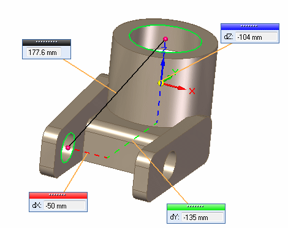
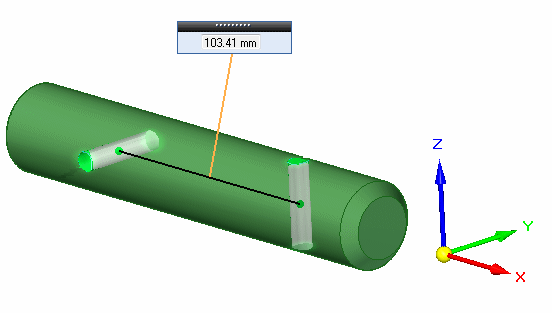
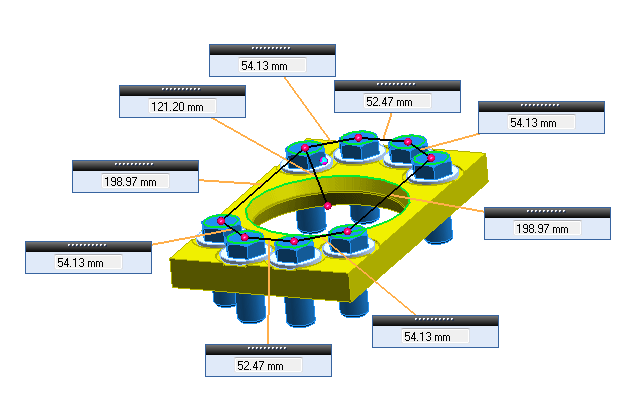
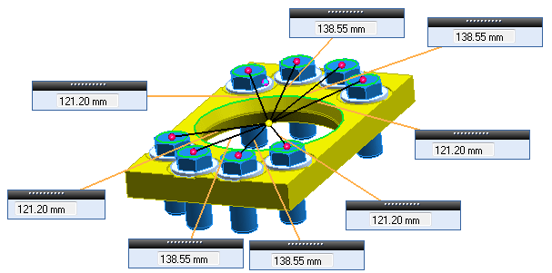

3D Measure command
The 3D measure command can be used to measure many parameters such as distances, angles, volumes, and areas with options to use these values to define variables if needed. Multiple results, such as end to end lines or surface area of multiple faces, will have a summation of the individual values displayed as a total value.
The results of the measurements are graphically displayed with measurement handles showing the values and color coded geometry representing the measurements.

Measuring the distance between holes is shown next.

Element types for measurement selection are:
-
All Elements
-
Keypoints
-
Lines
-
Curves
-
Cylinder Axes
-
Planes
-
Faces
-
Solid Bodies
-
Holes/Threads
Different unit types can be specified for measurements as well as measuring with different defined coordinate systems.
Measurement types can be point to point, maximum or minimum distances. Measurements can switched between a cumulative distance showing the total distance along multiple points, or all measurements having a common origin.
Measuring cumulative distance is shown in the image below.

Measuring from a common origin is shown in the image below.

The results of the measurements are shown, and also in the measurement dialog box. Values can be copied from the dialog box for use in other applications.
Variables can be created from the resultant measurements and stored in the variable table by clicking the measure variable option on the command bar.
Element types can be changed during the process of measuring, however incompatible types will cause an error message to be displayed.
How do I
Measure an angleMeasure the minimum distance between two elements
Measure a normal distance from a plane or line to a keypoint
Inquire about an element
Look up more details
Measure distance commandMeasure Minimum Distance command
Measure Minimum Distance command bar
Measure Normal Distance command
Measure Normal Distance command bar
Inquire Element command
Inquire Element command bar
Measure Angle command
Measure Angle command bar